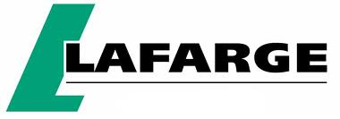
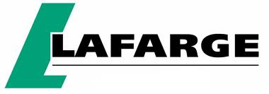
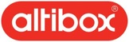
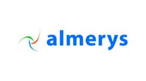
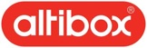
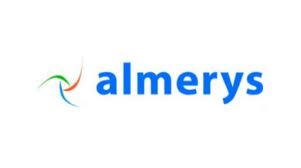

#####Nuxeo CAP / Nuxeo EP
Content Application Platform designed to be extended and customized to develop effective business applications

#####Nuxeo DM
Collaborative Document Management Solution to help you manage your business content efficiently

#####Nuxeo DAM
Make the best of your media assets. A solution to streamline digital asset management tasks

#####Nuxeo SC
Inspired by the best elements of the social network
experience, the Social Collaboration module adds an interactive,
team-oriented dimension to the Nuxeo Content Management
platform.


 



 


